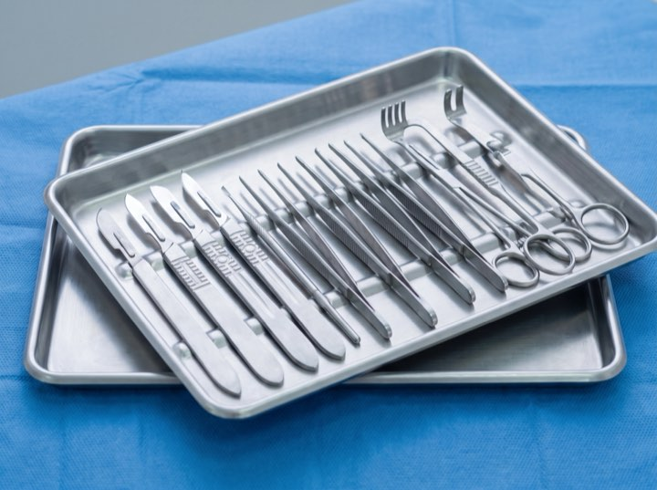
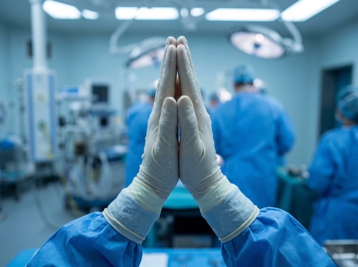
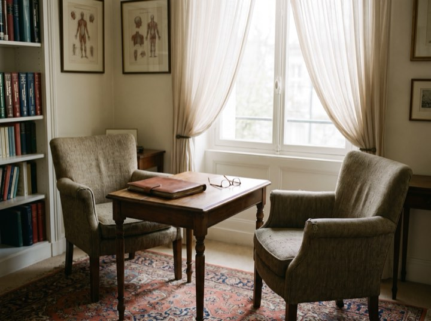
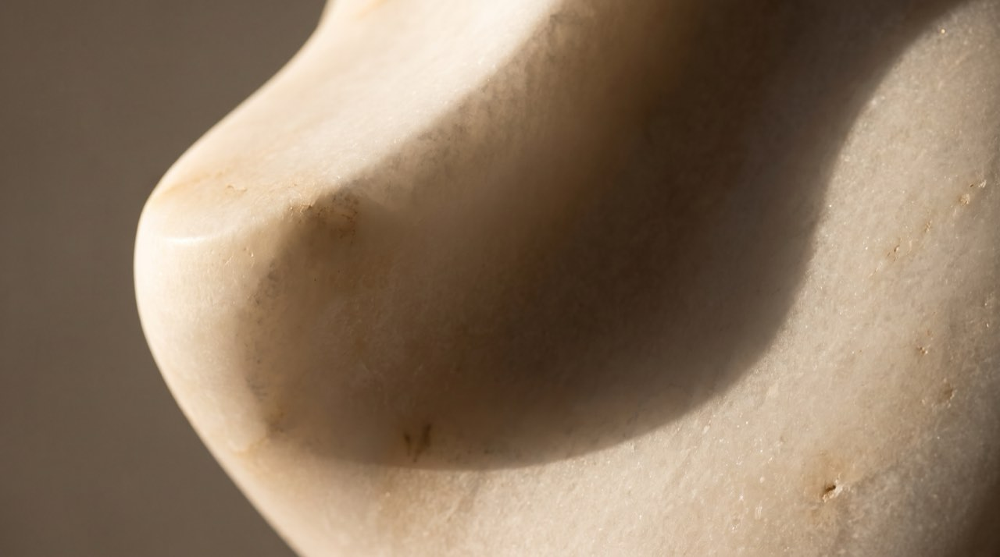

What accredited means
The suite the certification refers to.
An accredited suite, a dedicated anaesthetist, and instruments set out for one operation at a time.





Board certified · ABPS
Aesthetic and reconstructive surgery in a private, accredited facility. Certification, hospital privileges and facility accreditation all published here, because almost nobody explains which of the three actually protects you.

Services
A short list, deliberately. These are the operations performed often enough to be performed exceptionally.
Augmentation, lift, reduction and reconstruction. Sizing done with imaging so you see the projected outcome before deciding.
Abdominoplasty, liposuction and post-weight-loss contouring, staged sensibly rather than crammed into one operation.
Facelift, blepharoplasty and rhinoplasty. Conservative by philosophy: the aim is that nobody can tell you've had anything done.
Injectables, resurfacing and skin. Often the right starting point, and we'll say so when surgery isn't warranted yet.
Results
Process
Unhurried, private, and with the surgeon throughout. Most people are deciding over months, not days.
Fifty minutes with the surgeon. Examination, imaging where useful, and a frank conversation about what is and isn't achievable.
A written surgical plan and an all-inclusive quote covering facility, anaesthesia and follow-up, with no line items appearing later.
Medical clearance, photographs and a second sit-down to confirm you're certain. You can change your mind at any point.
Accredited suite, board-certified anaesthesia, and a structured follow-up schedule out to one year with photographs at each stage.
What accredited means
An accredited suite, a dedicated anaesthetist, and instruments set out for one operation at a time.



Most of our patients thought about it for a year or more. A consultation commits you to nothing and is the fastest way to replace guesswork with facts.
Private consultations. Bring the other quotes and we will go through what each credential on them does and doesn't mean. Enquiries handled confidentially.